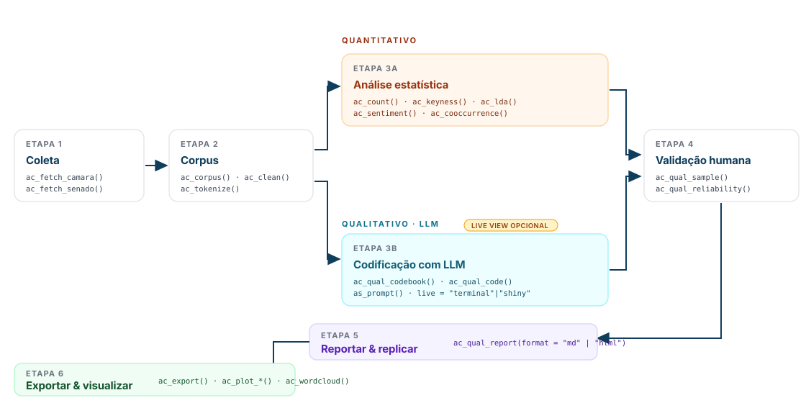

Análise de Conteúdo em R — pipeline integrado qualitativo (LLMs) e quantitativo, com foco em corpora brasileiros e dados parlamentares.

Em uma linha
Do texto bruto ao resultado publicável — codebook, LLM, keyness, LDA, sentimento e concordância inter-codificador, num único fluxo reprodutível.
Para quem é
|
Pesquisador social |
Cientista político |
Analista de políticas públicas |
Comece em 3 linhas
# 1. Instalar
install.packages("acR") # via CRAN (em análise)
remotes::install_github("andersonheri/acR") # ou versão dev
# 2. Importar seus documentos (PDF, docx, xlsx, csv, txt, imagens com OCR)
library(acR)
corpus <- ac_import("dados/*.pdf") # ou "planilha.xlsx", "documento.docx"
# 3. Rodar o pipeline mínimo
ac_count(corpus) |> ac_top_terms(n = 10)
# 4. Codificar qualitativamente (requer chave de LLM)
codebook <- ac_qual_codebook("posicao", "Classifique.",
categories = list(favor = "...", contra = "..."))
resultado <- ac_qual_code(corpus, codebook, model = "anthropic/claude-sonnet-4-5")Vignette completa: Comece aqui → · Quickstart 5 min →
O que o acR faz
Módulo qualitativo. Você escreve um codebook (categorias + definições + exemplos), e a LLM classifica cada documento, reportando categoria, nível de confiança via self-consistency e um raciocínio estruturado. Uma amostra é exportada para revisão humana, e a concordância inter-codificador (percent agreement, Cohen’s/Fleiss’ kappa, Krippendorff’s alpha, Gwet’s AC1, F1 macro) é calculada com IC via bootstrap.
Módulo quantitativo. Ferramentas estatísticas clássicas de análise de conteúdo: frequência de termos e por grupo, TF-IDF, keyness (χ²/log-likelihood), redes de co-ocorrência com PMI, análise de sentimento em português (OpLexicon), modelagem de tópicos com LDA e seleção automática de k. Visualizações prontas para publicação em ggplot2, compatíveis com ipeaplot.
Coleta nativa de discursos da Câmara dos Deputados (por período, partido, UF) e do Senado Federal (via senatebR).
Fundamentação metodológica
O pipeline segue Sampaio e Lycarião (2021) — referência atual para análise de conteúdo categorial no Brasil — e Krippendorff (2018). Bardin (2011) é reconhecida como pioneira, mas o pacote privilegia abordagens metodologicamente atualizadas. A camada de LLM é inspirada no quallmer (Maerz e Benoit, 2025) e comunica com múltiplos provedores via ellmer (Wickham et al., 2025).
Status:
acRestá em desenvolvimento ativo (submissão CRAN em andamento). Contribuições e feedback via issues.
Instalação
# Após aprovação na CRAN (submissão em andamento):
install.packages("acR")
# Versão de desenvolvimento do GitHub:
# install.packages("remotes")
remotes::install_github("andersonheri/acR")
# O módulo qualitativo requer o ellmer para comunicação com LLMs
install.packages("ellmer")Pipeline qualitativo: do texto à classificação
Passo 1 — Coletar discursos parlamentares
O acR tem funções nativas para coletar dados das APIs abertas da Câmara dos Deputados e do Senado Federal. A coleta da Câmara é feita por período, partido, UF e tipo de discurso, com paginação automática e tratamento de erros de conexão. A coleta do Senado é viabilizada pelo pacote senatebR, de Vinicius Santos (UERJ), cujas funções o acR estende com uma interface padronizada ao restante do pipeline.
Passo 2 — Estruturar e limpar o corpus
O objeto ac_corpus é a unidade central do pacote, carregando o texto, os metadados e o idioma do corpus, aceito por todas as funções de análise.
corpus <- ac_corpus(
corpus_raw,
text = texto,
docid = id_discurso
)A função ac_clean() aplica transformações configuráveis ao texto, com controle granular sobre cada etapa. Antes de rodar a limpeza, o pesquisador pode inspecionar e editar as stopwords com ac_clean_stopwords():
# Construir vetor de stopwords customizado a partir do preset legislativo
sw <- ac_clean_stopwords(
preset = "pt-legislativo",
add = c("nobre", "ilustre", "respeitavel", "honrado"),
remove = c("lei", "projeto", "constituicao") # relevantes para a análise
)
# Limpeza com todas as opções
corpus_limpo <- ac_clean(
corpus,
lower = TRUE,
remove_punct = TRUE,
remove_url = TRUE,
remove_email = TRUE,
remove_hashtags = TRUE, # novo: remove #termos separado de símbolos
remove_mentions = TRUE, # novo: remove @usuario separado de símbolos
remove_stopwords = "pt-legislativo",
extra_stopwords = sw, # novo: stopwords adicionais ao preset
protect = c("PT", "PL", "CCJ"), # siglas preservadas
normalize_pt = TRUE,
custom_replacements = list( # novo: substituições livres antes da limpeza
"pres\\." = "presidente",
"dep\\." = "deputado",
"v\\.exa" = "vossa excelencia"
),
min_char = 3L, # novo: descarta tokens com menos de 3 chars
handle_na = "remove", # novo: remove documentos com texto NA
verbose = TRUE # novo: exibe resumo da limpeza
)O argumento verbose = TRUE exibe um resumo com tokens antes e depois, quantos foram removidos por etapa e quantos documentos ficaram vazios após a limpeza — útil para calibrar os parâmetros antes de rodar o pipeline completo.
Passo 3 — Definir o codebook
codebook <- ac_qual_codebook(
name = "temas_plenario",
instructions = "Classifique o tema principal do discurso parlamentar.",
categories = list(
seguranca_publica = list(
definition = "Discursos sobre violência, polícia, crime e segurança pública."
),
economia_fiscal = list(
definition = "Discursos sobre impostos, orçamento e política fiscal."
),
politica_social = list(
definition = "Discursos sobre saúde, educação e assistência social."
),
orientacao_votacao = list(
definition = "Orientação de bancada para votação de projetos de lei."
),
outros = list(
definition = "Discursos que não se encaixam nas categorias anteriores."
)
),
mode = "manual"
)Passo 4 — Classificar com LLM
chat_obj <- chat_groq(
model = "llama-3.3-70b-versatile",
echo = "none"
)
resultado <- ac_qual_code(
corpus = corpus_limpo,
codebook = codebook,
chat = chat_obj,
confidence = "total",
k_consistency = 3L,
reasoning = TRUE,
reasoning_length = "short"
)Passo 5 — Validar com codificadores humanos
amostra <- ac_qual_sample(resultado, n = 15, strategy = "uncertainty")
ac_qual_export_for_review(sample = amostra, path = "revisao.xlsx", corpus = corpus_limpo)
humano <- ac_qual_import_human("revisao.xlsx")
ac_qual_irr(gold = humano, predicted = resultado,
id_col = "doc_id", cat_col = "categoria")Os resultados de validação com 15 documentos produziram kappa de Cohen de 0.70, concordância substancial segundo Landis e Koch (1977), comparável aos benchmarks de Gilardi, Alizadeh e Kubli (2023).
Provedores de LLM suportados
O acR usa o pacote ellmer como backend, o que significa que qualquer provedor suportado pelo ellmer funciona diretamente via chat =. Isso inclui modelos comerciais (OpenAI, Anthropic, Google, Mistral, DeepSeek), modelos locais via Ollama, e qualquer serviço que implemente a interface compatível com a API da OpenAI, como instâncias privadas ou servidores institucionais.
chat_obj <- chat_groq(model = "llama-3.3-70b-versatile", echo = "none")
chat_obj <- chat_google_gemini(model = "gemini-2.5-flash", echo = "none")
chat_obj <- chat_ollama(model = "llama3.2", echo = "none")
chat_obj <- chat_openai(model = "gpt-4.1", echo = "none")
chat_obj <- chat_anthropic(model = "claude-sonnet-4-20250514", echo = "none")As chaves de API devem ser configuradas no .Renviron com usethis::edit_r_environ(), nunca diretamente no código.
Busca de literatura via OpenAlex
lit <- ac_qual_search_literature(
concept = "democratic backsliding",
n_refs = 5,
journals = "default",
min_citations = 50,
chat = chat_obj
)Pipeline quantitativo
tokens <- ac_tokenize(corpus_limpo)
contagem <- ac_count(tokens)
ac_plot_top_terms(ac_top_terms(contagem, n = 15))
tfidf <- ac_tf_idf(ac_count(tokens, by = "partido"), by = "partido")
ac_plot_tf_idf(tfidf, by = "partido", n = 10)
keyness <- ac_keyness(tokens, target = "PT", ref = "PL")
ac_plot_keyness(keyness)
sent <- ac_sentiment(corpus_limpo)
ac_plot_sentiment(sent)
cooc <- ac_cooccurrence(tokens, window = 5, min_count = 2)
ac_plot_cooccurrence(cooc, top_n = 30)
lda <- ac_lda(tokens, k = 5)
ac_plot_lda_topics(lda)Qual função eu preciso?
Um guia rápido do objetivo ao código. Cada linha aponta a função principal e a vignette com o exemplo completo. As demais funções são variações ou utilitários — veja Funções disponíveis (completo).
| Objetivo | Função | Vignette |
|---|---|---|
| Importar arquivos (PDF, Word, Excel, TXT, imagem com OCR) | ac_import() |
Quickstart |
Criar corpus a partir de data.frame ou vetor |
ac_corpus() |
Quickstart |
| Coletar discursos da Câmara/Senado |
ac_fetch_camara() · ac_fetch_senado()
|
Estudo de caso |
| Limpar texto (stopwords, URLs, acentos, NAs) |
ac_clean() + ac_clean_stopwords()
|
Quantitativo |
| Contar tokens | ac_count() |
Quantitativo |
| Top termos + gráfico |
ac_top_terms() → ac_plot_top_terms()
|
Quantitativo |
| Termos distintivos por documento |
ac_tf_idf() → ac_plot_tf_idf()
|
Quantitativo |
| Comparar grupos (partido, período, tema, região…) |
ac_keyness() → ac_plot_keyness()
|
Quantitativo |
| Nuvem de palavras (ggwordcloud) | ac_wordcloud() |
Quantitativo §6 |
| Nuvem comparativa entre 2 grupos | ac_plot_wordcloud_comparative() |
Quantitativo §6.1 |
| Mapear onde termos aparecem no texto | ac_plot_xray() |
Quantitativo |
| Rede de coocorrência |
ac_cooccurrence() → ac_plot_cooccurrence()
|
Quantitativo |
| Análise de sentimento (OpLexicon) |
ac_sentiment() → ac_plot_sentiment()
|
Sentimento |
| Modelagem de tópicos (LDA) |
ac_lda() → ac_plot_lda_topics()
|
LDA |
| Cluster de documentos (hclust, k-means, PAM) |
ac_cluster_documents() → ac_plot_cluster()
|
Cluster |
| Criar codebook para LLM | ac_qual_codebook() |
Qualitativo LLM |
| Classificar textos com LLM | ac_qual_code() |
Qualitativo LLM |
| Amostrar documentos para revisão humana |
ac_qual_sample() · ac_qual_export_for_review()
|
Qualitativo LLM |
| Concordância humano × LLM (Kappa, Krippendorff) |
ac_qual_irr() · ac_qual_reliability()
|
Qualitativo LLM |
| Escolher o modelo LLM certo | ac_qual_recommend_model() |
Qualitativo LLM |
| Relatório metodológico reprodutível | ac_qual_report() |
Replicabilidade |
| Exportar (CSV, LaTeX, Excel, RDS) | ac_export() |
Replicabilidade |
Cobertura de testes
Suite de 360 blocos test_that com 655 assertions, cobrindo ~55% do código (medido com covr::package_coverage()). Testes de integração com APIs externas (Câmara, Senado, LLM) usam skip_on_cran() e verificação prévia de disponibilidade — não bloqueiam CI offline nem o R CMD check da CRAN.
Documentação
Site completo: https://andersonheri.github.io/acR/ — vignettes navegáveis, referência de todas as funções e changelog.
Comece por aqui
- Quickstart (5 min) — do zero ao primeiro gráfico.
- Visão geral do pacote — pipeline em uma hora.
- Replicabilidade ponta-a-ponta — do dado bruto ao relatório reprodutível.
Pipeline qualitativo (LLMs)
- Codificação com LLMs — guia completo — codebook, self-consistency, revisão humana e concordância.
- Estudo de caso: proposições legislativas — aplicação real com dados da Câmara.
Pipeline quantitativo
- Frequências, keyness e coocorrência — inclui nuvens de palavras (ggwordcloud), comparativa entre grupos, TF-IDF por tema, coocorrência com PMI/heatmap.
- Agrupamento não supervisionado de documentos — hclust, k-means, PAM; 6 visualizações e comparação lado-a-lado com LDA.
- Análise de sentimento (OpLexicon) — polaridade e sentimento agregado por documento.
-
Modelagem de tópicos (LDA) — escolha de
k, interpretação de tópicos e visualização.
Referência de funções
- Índice completo por área — Coleta, Corpus, Análise qualitativa (LLM), Análise quantitativa, Validação e confiabilidade, Visualização, Replicabilidade, Exportação.
- Notícias / changelog — histórico de versões (atual: 0.3.1).
Como citar
citation("acR")Henrique, A. (2026). acR: Análise de Conteúdo em R.
R package version 0.3.1. ORCID: 0000-0002-1842-2725.
Centro de Estudos da Metrópole (CEM-Cepid) — Universidade de São Paulo.
https://andersonheri.github.io/acR/Referências
Bardin, L. (2011). Análise de conteúdo. Edições 70.
Gilardi, F., Alizadeh, M., & Kubli, M. (2023). ChatGPT outperforms crowd workers for text-annotation tasks. PNAS, 120(30).
Gwet, K. L. (2014). Handbook of Inter-Rater Reliability. 4. ed. Advanced Analytics.
Krippendorff, K. (2018). Content Analysis: An Introduction to Its Methodology. 4. ed. SAGE.
Landis, J. R., & Koch, G. G. (1977). The measurement of observer agreement for categorical data. Biometrics, 33(1), 159–174.
Maerz, S. F., & Benoit, K. (2025). quallmer: Qualitative Analysis with Large Language Models. R package version 0.3.0. https://quallmer.github.io/quallmer/
Priem, J. et al. (2022). OpenAlex: A fully-open index of the global research system. arXiv, 2205.01833.
Sampaio, R. C., & Lycarião, D. (2021). Análise de conteúdo categorial: manual de aplicação. Brasília: ENAP. https://repositorio.enap.gov.br/handle/1/6542
Santos, V. (2024). senatebR: Functions to collect data from the Brazilian Senate. R package version 0.1.0. https://github.com/vsntos/senatebR
Souza, M., & Vieira, R. (2012). Sentiment analysis on Twitter data for Portuguese language. PROPOR.
Wang, X. et al. (2023). Self-consistency improves chain of thought reasoning in language models. EMNLP.
Wickham, H. et al. (2025). ellmer: Chat with Large Language Models. Posit. https://ellmer.tidyverse.org
Licença
MIT © Anderson Henrique (ORCID: 0000-0002-1842-2725) — Centro de Estudos da Metrópole (CEM-Cepid), Universidade de São Paulo.